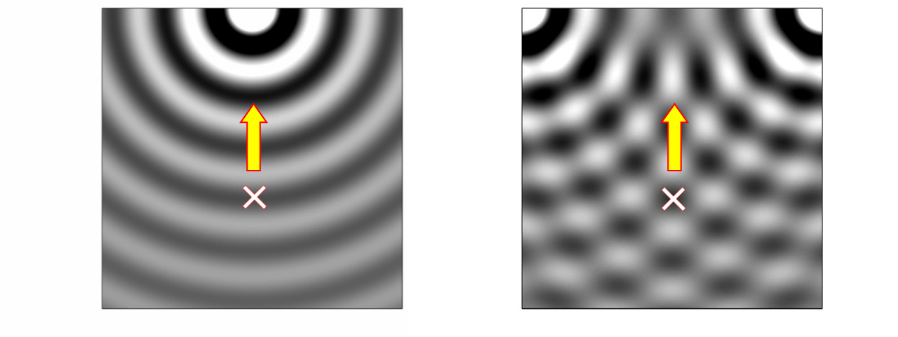
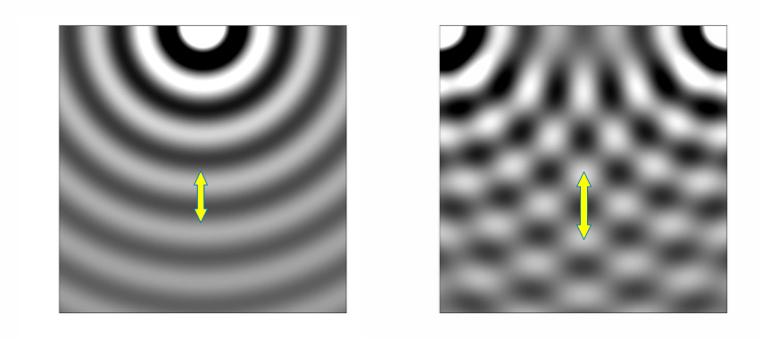

The physical property of the wave at any point in the 3-dimensional space can be approximated by giving
for each frequency bin of the wave at the point.
In general, every wave can be regarded as the sum of one or more sine waves. By applying an N-point FFT, any signal can be subdivided into sinusoids of the frequencies between f0 Hz and fN-1 Hz, inclusive. Since its frequency is known, each sine wave can be specified by its amplitude and phase. The amplitude and phase are potentially contained in the monaural signal itself.
A monaural signal, however, does not contain spatial properties.
The spatial properties of a wave at the point are the propagation direction, propagation speed, and attenuation factor of each frequency component.
To synthesize panoramic sound, it is necessary to make each sine wave propagate from the proper direction at the proper speed.
The attenuation factor has to be taken into consideration only when the observation area has some volume. In the Full-Spherical Stereo technology, the observation point is assumed to have no volume and the attenuation factor is ignored.
Figure 1 shows the propagation of a sine wave. The arrows represent the directions of propagation, the triangles on the top indicate the positions of the sound sources and the 'X' is the observation point.
Fig. 1 Propagation of a sine wave
The left and right animations show a sine wave generated by a single source and that generated by 2 sources, respectively. Triangles on the top represent the sound source positions.
The direction from which the wave is coming are shown in Fig. 2. In the case of a single source (left), it corresponds to the sound source direction. When there are more than 2 sources, it does not correspond to the sound source directions (right).

Fig. 2 Direction from which the wave propagates
A sine wave propagating from a single source (left) and that generated by 2 sources (right) are shown. The arrow in each figure represens the direction from which the sound wave propagates.
The wave length of a sine wave at the observation point is represented by a both-sided arrow in each figure of Fig. 3. It can be seen that the wave length in the right figure is longer than that in the left. It indicates that the sine wave in the right figure is propagating at the faster speed at the observation point than the sine wave in the left figure.

Fig.3 Wave length
The both-sided arrow in each figure represents the wave length of the sine wave at the observation point.
The wave length (or the sound speed) affects reflection and diffraction of the sound. Consequently, it affects the interaural phase difference and interaural level difference in the actual life.
It is important, therefore, to make each sine wave propagate not only from the proper direction but also at the proper speed.
It is worth noting that no matter how many wave sources there are, each frequency component has only one direction and speed of propagation at the given point. That is why they can be measured by a limited number of sensors. Three sensors in the 2-dimensional plane and 4 sensors in the 3-dimensional space are necessary and sufficient.